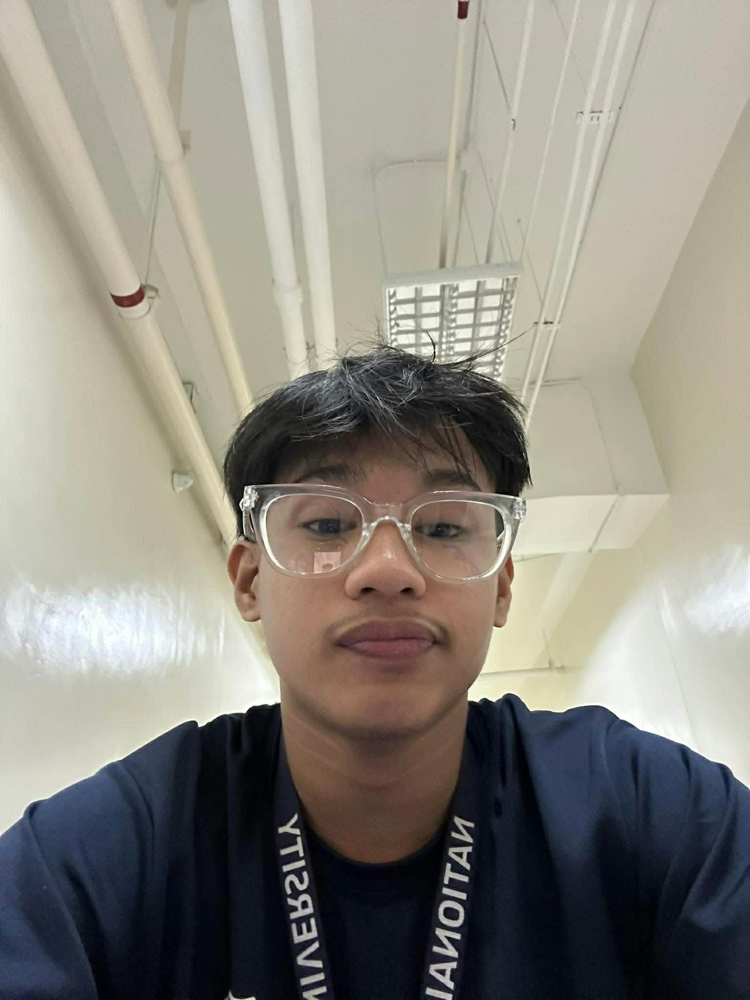

01 / PYTHON
Concert Attendance Monitoring System
A Python-based project designed to record concert attendees and organize attendance information using dictionaries.
View on GitHub →WELCOME TO MY DIGITAL SPACE
Exploring technology, building solutions, and continuously learning one line of code at a time.

BS Information Technology Student
GET TO KNOW ME
Hello! I'm Ricky Joshua T. Orillano, an Information Technology student at National University - Fairview. I am passionate about technology, programming, and understanding how computers work.
I enjoy exploring both hardware and software, from troubleshooting computer components to developing simple applications and websites.
As a student, I believe that learning takes time. I continuously challenge myself to improve my programming skills and become a better IT professional.
WHAT I'M LEARNING
MY ACADEMIC JOURNEY
| Category | Details |
|---|---|
| School | National University - Fairview |
| Program | Bachelor of Science in Information Technology |
| Year Level | 2nd Year College |
THINGS I'VE WORKED ON
01 / PYTHON
A Python-based project designed to record concert attendees and organize attendance information using dictionaries.
View on GitHub →02 / JAVA
A Java Swing application that records employee attendance and stores information using CSV files.
View on GitHub →03 / DATABASE
A database design project that illustrates the relationships between entities in a banking system.
View on GitHub →WHERE I'M HEADED
LET'S CONNECT
Have a question or want to connect? Feel free to reach out!
orillanoricky84@gmail.com